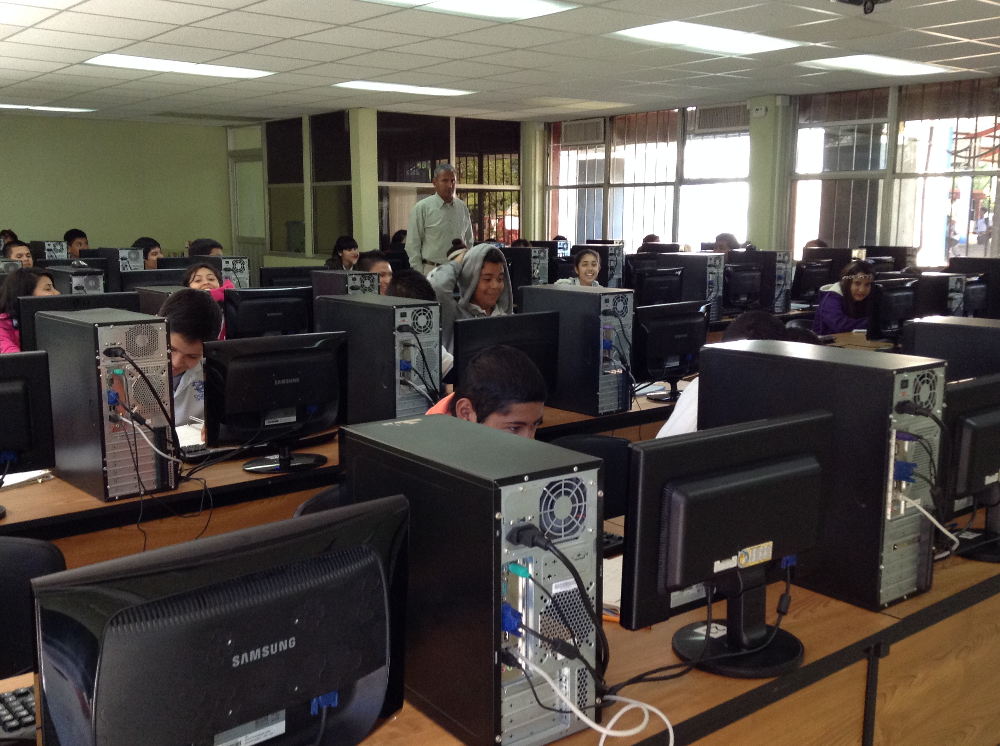

TÉCNICO EN PROGRAMACIÓN (Área Físico - Matemática).
Esta es una de las áreas que brinda la institución en la que se abordarán distintos temas en los diferentes semestres.
La carrera de técnico en programación ofrece las competencias profesionales que permiten al estudiante realizar actividades dirigidas a analizar, diseñar, desarrollar, instalar y mantener software de aplicación tomando como base los requerimientos del usuario.
Todas estas competencias posibilitan al egresado su incorporación al mundo laboral o desarrollar procesos productivos independientes, de acuerdo con sus intereses profesionales y necesidades de su entorno social.
Así mismo, contribuyen a desarrollar competencias genéricas que les permitan comprender el mundo e influir en él, les capacita para aprender de forma autónoma a lo largo de la vida, desarrollar relaciones armónicas, participar en los ámbitos social, profesional y político.
Para lograr las competencias el estudiante debe de tener una formación profesional, que se inicia en el segundo semestre y se concluye en el sexto semestre, desarrollando en este lapso de tiempo las competencias profesionales que marca el programa de estudios.
Cabe destacar que los módulos de formación profesional tienen carácter transdisciplinario, por cuanto corresponden con objetos y procesos de transformación que implica la integración de saberes de distintas disciplinas.
Durante su formación el estudiante hará lo siguiente:
- Desarrolla e instala software de aplicación utilizando programación estructurada con almacenamiento persistente de los datos.
- Diseñará y administrará bases de datos simples, desarrolla software de aplicación utilizando programación orientada a objetos con almacenamiento persistente de los datos.
- Desarrollará software pero también administrará bases de datos avanzadas y desarrollo de aplicaciones web y móviles.
- Administra sistemas operativos aplicaciones y servicios, instala y configura aplicaciones y servicios.
- Desarrolla, administra y configura soluciones de ELearning y comercio electrónico, desarrolla soluciones de comercio electrónico.
Es una buena opción si te llama la atención el desarrollo de aplicaciones web, la programación en general, el mundo de la computación y todas sus ramas.
Es importante que entiendas que no necesitas tener conocimientos previos para esta área ya que todo es bien enseñado desde cero.
Los proyectos y retos a los que te enfrentarás al cursar esta carrera son muy diversos, ya que pueden ir desde prácticas sencillas como crear un programa que multiplique dos números hasta una página web completa o un sistema de cobro para una empresa. En los diferentes módulos que tomarás durante los semestres comprenderás a ciencia cierta lo que conlleva utilizar programas para plasmar tus códigos. Además de otros para trabajar bases de datos en la nube en caso de la creación de páginas web.
La formación que ofrece la carrera de técnico en programación permite al egresado a través de la articulación de saberes de diversos campos realizar actividades dirigidas a la instalación y desarrollo de software de aplicación utilizando programación estructurada y orientada a objetos en ambientes web y móviles con almacenamiento persistente de datos, configuración y administración de plataforma e learning y comercio electrónico.
Carreras que se pueden continuar a un nivel superior
Algunas de las carreras que puedes continuar a nivel superior a partir de tus conocimientos son:
- Ing. En Sistemas Computacionales.
- Lic. En Informática.
- Lic. Físico - Matemático.
- Ing. En Electrónica.
- Arquitectura.
Campos de oportunidad laboral
Los campos de oportunidad laboral al convertirse en técnico en esta especialidad son:
- Secretaría de Estado.
- Empresas e Industrias Privadas.
- Centros Comerciales en Genral.
- Bancos e Instituciones de Crédito.
- Empresas de Servicios de Cómputo.
